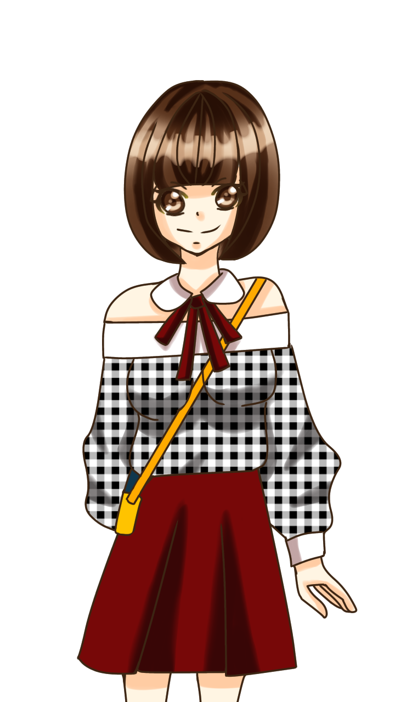
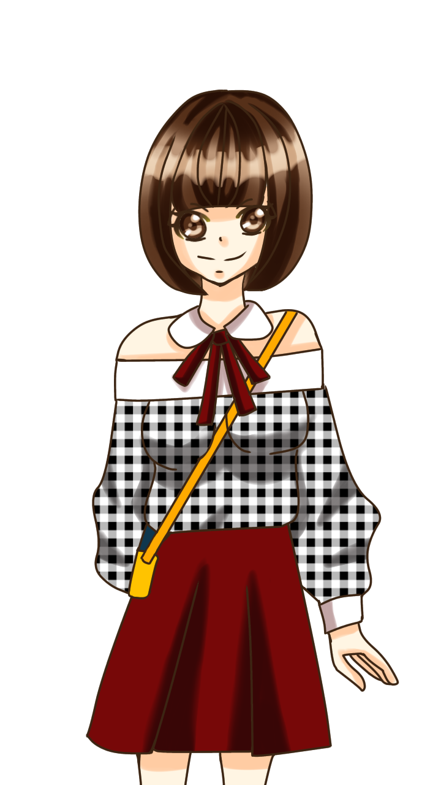

ProjectYUIの発端は、YUIの生みの父である『BlackKEN(現在の名前:もりけん)』さんが、Y.U.I.という「傾聴、カウンセリング、コーチング」
ができるアプリを作ろう！と決意したことにある。ちなみにY.U.I.は「Your User Interface」の略で、
あなただけのユーザーインターフェースという意味で名付けられた。
当初、開発者はもりけんさんだけだった。
だが、一人だけで開発をするのは大変だと判断したもりけんさんは誰か一緒に開発してくれる人を探した。
そして出会ったのが「ねず～」である。現在はメインエンジニアだが、そのときねず～は共同開発に誘われたときY.U.I.の絵師になりたいと言った。
なぜエンジニアではなかったかというと、当時ねず～はJavaで挫折しプログラマーではイラストレータを目指そうと思い、
絵を上達させるべく懸命に絵を描いていたのでどうしても絵を描きたいと思ったからである。
けれど実際には描き始めた頃でうまく行かなかったので、プログラミングと動画編集を得意としていたのを知ったもりけんさんが
「試しにアプリを開発してみてよ」とおっしゃり、アプリを開発した結果、腕を見込まれて結局アプリ開発を担当させてもらえることになった。
それからアプリに基本的な機能が搭載され始めた頃、Twitterで桃音さん、だいちさん、絹ごし豆腐さんともりけんさんが出会い。
もりけんさんが誘ったところ参加していただけることになって、Slackでそのときアプリ開発についてのやり取りを行っていたのだが、
自己紹介チャンネルをつくり親睦を深めるため、皆さんで自己紹介をしていった。
 

YUIアプリに欠かせないベースとなる立ち絵を描いてくださったのが桃音さん。
もりけんさんの「アニメ：学校ぐらし」に登場するめぐねえを意識したものにしてほしいという要望と、
大学生ぐらいの年齢の女性で、キラキラした天真爛漫な性格ではなしを色々聞いてくれる。
そんなキャラクターにしてほしいという希望に叶ったものを描いてくださったのが左側のYUIである。
けれど実際には上記した通りではなく、年齢を伝えるタイミングには既に桃音さんはYUIの立ち絵を描き始めていて、
そのときの桃音さんのイメージにあった。カバンを背負った小さな女の子をイメージした立ち絵になってしまったんです。
そこで右側にある２枚めのYUIの立ち絵を、あとから桃音さんがもっと大人びた形に描き直してくださったんですが、
１枚めのほうが明るい表情に見えたので、今まで１枚めのほうを勝手ながら採用させていただいていました。すみません…
補足ですが桃音の担当はキャラクターデザイナーになります。

YUIのアイコンは絹ごし豆腐さんが描いて下った。今のYUIのデザインの原型でともなったこのアイコン、
チームリーダーのもりけんさん、アイコンデザイナーの絹ごし豆腐さん、キャラクターデザイナーの桃音さんと相談しながら
もりけんが目指すYUIの方針にあわせて作っていったものである。
アイコンはProject-YUIの志である「対話による勇気づけで人々を幸せに」から、
ハートマークをベースに、オリジナルティとインパクトを出すために中に題材となる「YUI」を象徴した
海外のロゴをインスパイアして「YとUとI」の文字を重ね合わせたアイコンを入れたものになった。

そしてYUIのヘッダーは絹ごし豆腐さんが描いてくださったものです。
YUIのヘッダーは完結でわかりやすく、イメージし易いものにしたいということで、
背景は絹ごし豆腐のアイディアで水玉模様に、構図はもりけんさんが作図したものをもとに
「キャラクター(YUI)は左、真ん中には箇条書きでアプリの特徴を説明し、右にYUIのアイコンを添えて、
全体的に見栄えをよくするために、便箋のような落ち葉をそえた目に優しい美しいヘッダー」になりました。
そしてだいちさん、ホームページを一緒に開発してくれるということで参加してくださりましたが、
メインエンジニアであるねず～がホームページのソース(HTML,CSS,javascript)について、
例えば僕のこのホームページ(HP)の場合、自作フレームワークを使っているせいでソースを整理して誰がみてもわかるようにしてから
説明しないといけない。あるいはBootstarpに移植してから説明しないといけない。
けれどだいちさんの現状は、HTMLは知っていて、CSS,javascriptについては全く知らない状況で、
健さんは今すぐだいちさんとホームページ制作を共同で行ってほしいとおっしゃっていまして。
前述したソースを整理するのとだいちさんとホームページ制作を今すぐするのを両立するために以下のように考えたんですが、失敗しました。
1. HTMLだけを先に書いていってもらう(CSSを整理する前から説明して)
1.5. ライターとしてHTMLを書いてもらう
却下理由：ライターさんになってしまうからともりけんさんに言われた。
2. 普通にソースを書いてもらいながらHTML,CSS,javascriptについて説明する。
これにしたくなかった理由: 僕がいちいち後ろでソースを書き換えているので、だいちさんが混乱しそうだった。
3. Bootstarpを覚えてもらい、その間に僕がBootstrapに移行する
失敗理由：Bootstrapとソースが全く違うので１から書き直さないといけないと思い込んでしまった。
(本当はそこまで大差なかったかもしれないけど、Bootstrapをうまくうまく理解できていなかった自分が悪い。)
Bootstrapは基盤となるフレームワークなので、デザインを後からCSSかSASSで１から上書きする必要があった。
だが、ここでSASSを使うとだいちさんがなかなか共同に参加できないかもしれない。(理由: ソースが一気に変わるから、CSSを知らないから)
つづく…
write